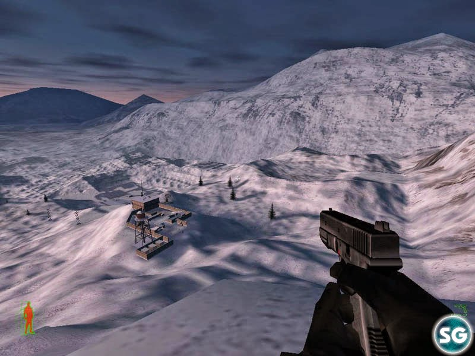

Project IGI is a series of tactical first-person shooter video games that were developed by Innerloop Studios and published by Eidos Interactive. The first game, Project I.G.I.: I'm Going In, was released in 2000 and followed the story of David Jones, a former British SAS agent who works for the Institute for Geotactical Intelligence (I.G.I.). Jones is sent on various covert missions to stop a rogue military officer named Ekk, who plans to use a stolen nuclear warhead to start a world war. The game was praised for its realistic graphics and sound design, but criticized for its poor artificial intelligence and lack of multiplayer features. ⁴ The second game, I.G.I.-2: Covert Strike, was released in 2003 and continued the story of Jones, who now works as a freelance operative. Jones is hired by Anya, his former handler at I.G.I., to stop a new threat from a Chinese general named Wu Xing, who has access to advanced weapons and technology. The game improved on the gameplay and features of the first game, adding a save system, stealth mechanics, and multiplayer modes. A prequel game, I.G.I. Origins, was announced in 2019 and is being developed by Antimatter Games. The game is set in 1980, during the Cold War, and follows Michael King, codenamed Regent, an ex-SAS soldier who is recruited by MI6 for global espionage missions. The game promises to deliver a tense and tactical first-person shooter experience with multiple ways to approach each mission. The game is expected to be released in 2023 .

.jpeg)
To buy the game open this link